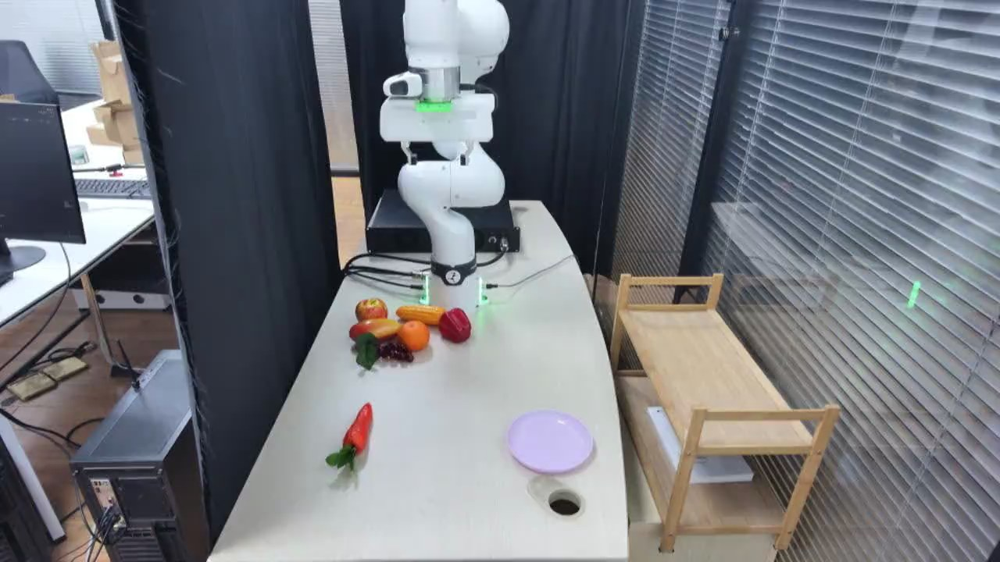

TAVP · 003_franka_pick_and_place_standard_success
Franka pick and place standard success

Annotation
From the dedicated visual review of this video (concise_action_v1). Plain text · JSON
Chronology
| Frames | Observation |
|---|---|
| 0–31 | The raised open gripper holds its starting pose above the back of the table. |
| 32–260 | The arm moves forward and down, aligning its open fingers on opposite sides of the separate carrot body. |
| 261–412 | The gripper closes around the carrot while the carrot remains near the tabletop, then holds still before lifting. |
| 413–550 | The arm lifts the gripped carrot clear of the table and carries it rightward toward the lavender plate. |
| 551–608 | The gripper positions the carrot over the plate and lowers it to the plate surface. |
| 609–642 | The fingers open, releasing the carrot; it settles diagonally on the lavender plate with its green leaves hanging toward the near rim and cable opening. |
| 643–734 | The open gripper pauses immediately above the placed carrot, which stays on the plate. |
| 735–834 | The empty gripper rises and withdraws toward the rear of the table; the carrot remains on the lavender plate. |
Uncertainties
- The exact frame of initial jaw contact and final plate contact is partly hidden by the gripper; stage boundaries are approximate. The produce appears to be artificial, but its material cannot be confirmed visually.
Complete review record action_review.json
{
"video_id": "003",
"review_method": "Visual inspection of every second decoded frame across the entire MP4 plus native-resolution transition frames, followed by native initial PNG",
"review_source_video": "/Users/nijiachen/Downloads/Robotvideo/TAVP/003_franka_pick_and_place_standard_success/original/video.mp4",
"source_frame_count": 835,
"source_fps": 30.0,
"inspected_frame_stride": 2,
"inspected_sampled_frame_count": 418,
"reviewed_contact_sheets": [
"sheet_001.jpg",
"sheet_002.jpg",
"sheet_003.jpg",
"sheet_004.jpg",
"sheet_005.jpg",
"sheet_006.jpg",
"sheet_007.jpg"
],
"native_detail_frames": [
160,
250,
276,
300,
320,
416,
424,
440,
510,
580,
620,
630,
640,
650,
735,
765,
834
],
"initial_scene": "A white articulated robot stands at the rear of a white rectangular table, its open two-finger gripper suspended above a cluster of colorful produce. A separate orange carrot with green leaves lies diagonally at the front-left, with the leaves toward the viewer. An empty shallow lavender plate sits at the front-right beside a circular tabletop cable opening. Black curtains stand behind and to the left of the robot; silver window blinds and a light wood shelf/cart are on the right, with computer equipment visible at the far left.",
"observed_sequence": [
{
"start_frame": 0,
"end_frame_inclusive": 31,
"action": "The raised open gripper holds its starting pose above the back of the table.",
"confidence": "high"
},
{
"start_frame": 32,
"end_frame_inclusive": 260,
"action": "The arm moves forward and down, aligning its open fingers on opposite sides of the separate carrot body.",
"confidence": "high"
},
{
"start_frame": 261,
"end_frame_inclusive": 412,
"action": "The gripper closes around the carrot while the carrot remains near the tabletop, then holds still before lifting.",
"confidence": "high"
},
{
"start_frame": 413,
"end_frame_inclusive": 550,
"action": "The arm lifts the gripped carrot clear of the table and carries it rightward toward the lavender plate.",
"confidence": "high"
},
{
"start_frame": 551,
"end_frame_inclusive": 608,
"action": "The gripper positions the carrot over the plate and lowers it to the plate surface.",
"confidence": "high"
},
{
"start_frame": 609,
"end_frame_inclusive": 642,
"action": "The fingers open, releasing the carrot; it settles diagonally on the lavender plate with its green leaves hanging toward the near rim and cable opening.",
"confidence": "high"
},
{
"start_frame": 643,
"end_frame_inclusive": 734,
"action": "The open gripper pauses immediately above the placed carrot, which stays on the plate.",
"confidence": "high"
},
{
"start_frame": 735,
"end_frame_inclusive": 834,
"action": "The empty gripper rises and withdraws toward the rear of the table; the carrot remains on the lavender plate.",
"confidence": "high"
}
],
"multi_step": false,
"selected_segment": {
"start_frame": 0,
"end_frame_exclusive": 835,
"reason": "The entire clip contains one continuous completed carrot pick-and-place, including grasp, transport, release, settling, and empty-gripper withdrawal; there is no second independent subtask.",
"terminal_state": "The carrot rests diagonally on the lavender plate with its leafy end over the near rim, while the open empty gripper is raised above and behind it."
},
"full_sequence_prompt": "The robotic arm picks up the orange carrot and places it on the purple plate. Keep the camera fixed; preserve robot geometry, physically valid joint motion, and normal gripper opening and closing.",
"world_model_prompt": "The robotic arm picks up the orange carrot and places it on the purple plate. Keep the camera fixed; preserve robot geometry, physically valid joint motion, and normal gripper opening and closing.",
"uncertainties": [
"The exact frame of initial jaw contact and final plate contact is partly hidden by the gripper; stage boundaries are approximate. The produce appears to be artificial, but its material cannot be confirmed visually."
],
"evidence_frame_indices": [
0,
250,
320,
440,
580,
640,
765,
834
],
"prompt_provenance": "visually_authored_from_video_and_initial_frame",
"selected_execution_status": "success",
"prompt_protocol": "concise_action_v1",
"review_source_original_video": "003_franka_pick_and_place_standard_success/original/video.mp4",
"review_source_crop_rectangle": null
}